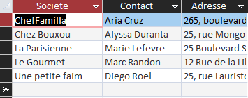
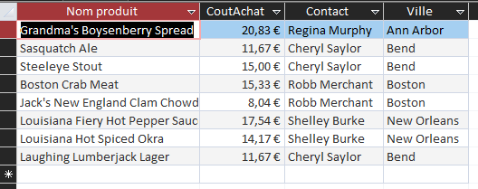
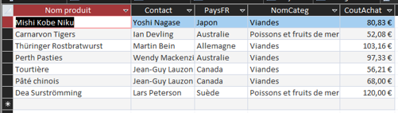
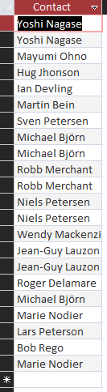
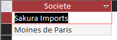
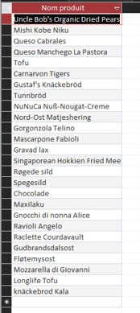
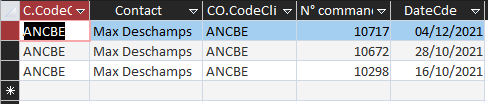
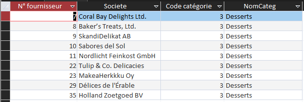
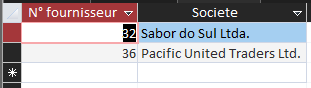
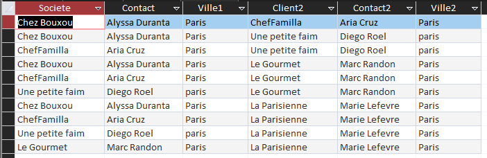

Nos requêtes SQL
Cette partie présente les dix requêtes réalisées pour répondre aux différentes questions du projet.
Requête 1 : Vérifier les coordonnées des clients parisiens
Question : Liste des clients situés à Paris, triée par société.
Requête SQL :
SELECT Societe, Adresse FROM Clientele WHERE Clientele.Ville Like "Paris" ORDER BY Clientele.Societe;
Résultat :

Requête 2 : Produits des États-Unis coûtant moins de 25 €
Question : Quels sont les produits de provenance des États-Unis avec un coût d’achat de moins de 25 € ? On veut connaître leur nom et leur prix, ainsi que le nom du fournisseur et sa ville.
Requête SQL :
SELECT Produit.nomProd, Produit.CoutAchat, Fournisseur.Contact, Fournisseur.Ville FROM (Pays INNER JOIN Fournisseur ON Pays.NoPays = Fournisseur.NoPays) INNER JOIN Produit ON Fournisseur.NoFour = Produit.NoFour WHERE Fournisseur.NoPays = 7 AND Produit.CoutAchat < 25;
Résultat :

Requête 3 : Viandes ou poissons coûtant plus de 50 €
Question : Quels sont les produits (avec fournisseur et pays de provenance) de catégorie viandes ou poissons ayant un coût d’achat de plus de 50 € ?
Requête SQL :
SELECT Produit.NomProd, Fournisseur.Contact, Pays.PaysFR, Categorie.NomCateg, Produit.CoutAchat FROM ((Fournisseur INNER JOIN Produit ON Fournisseur.NoFour = Produit.NoFour) INNER JOIN Pays ON Pays.NoPays = Fournisseur.NoPays) INNER JOIN Categorie ON Categorie.CodeCateg = Produit.CodeCateg WHERE (Produit.CodeCateg = 6 OR Produit.CodeCateg = 8) AND Produit.CoutAchat > 50;
Résultat :

Requête 4 : Fournisseurs proposant de la viande ou du poisson
Question : Quels fournisseurs proposent de la viande ou du poisson ?
Requête SQL :
SELECT Fournisseur.Contact FROM Fournisseur INNER JOIN Produit ON Fournisseur.NoFour = Produit.NoFour WHERE Produit.CodeCateg = 6 OR Produit.CodeCateg = 8;
Résultat :

Requête 5 : Fournisseurs proposant à la fois de la viande et du poisson
Question : Quels fournisseurs proposent de la viande et du poisson ?
Requête SQL :
SELECT Fournisseur.Societe FROM ((Fournisseur INNER JOIN (Categorie INNER JOIN Produit ON Categorie.Codecateg = Produit.CodeCateg) ON Fournisseur.NoFour = Produit.NoFour) INNER JOIN Produit AS Produit_1 ON Fournisseur.NoFour = Produit_1.NoFour) INNER JOIN Categorie AS Categorie_1 ON Produit_1.CodeCateg = Categorie_1.CodeCateg WHERE (((Categorie.CodeCateg) = 6) AND ((Categorie_1.CodeCateg) = 8));
Résultat :

Requête 6 : Produits conditionnés dans du carton ou du verre
Question : Quels sont les produits conditionnés dans du carton ou dans du verre ?
Requête SQL :
SELECT Produit.NomProd FROM Produit WHERE Produit.QteParUnit LIKE "*carton*" OR Produit.QteParUnit LIKE "*verre*";
Résultat :

Requête 7 : Les trois dernières commandes de Max Deschamps
Question : Donner les 3 dernières commandes du client Max Deschamps.
Requête SQL :
SELECT TOP 3 C.CodeCli, C.Contact, CO.CodeCli, CO.[N° commande], CO.DateCde FROM Clientele AS C INNER JOIN Commande AS CO ON C.CodeCli = CO.CodeCli WHERE C.Contact = "Max Deschamps" ORDER BY CO.DateCde DESC;
Résultat :

Requête 8 : Fournisseurs ne proposant que des desserts
Question : Quels fournisseurs ne proposent que des desserts ?
Requête SQL :
SELECT F.NoFour, F.Societe, P.CodeCateg, C.NomCateg FROM Fournisseur AS F INNER JOIN (Categorie AS C INNER JOIN Produit AS P ON C.CodeCateg = P.CodeCateg) ON F.NoFour = P.NoFour GROUP BY F.NoFour, F.Societe, P.CodeCateg, C.NomCateg HAVING (((Sum(IIf(P.CodeCateg=3,1,0)))=Count(*)));
Résultat :

Requête 9 : Fournisseurs étrangers sans produit au catalogue
Question : Quels fournisseurs hors France n’ont pas encore de produits au catalogue de KDou ?
Requête SQL :
SELECT F.NoFour, F.Societe
FROM (Fournisseur AS F INNER JOIN Pays AS PA ON F.NoPays = PA.NoPays) LEFT JOIN Produit AS P ON F.NoFour = P.NoFour
WHERE PA.PaysFR <> "France"
AND P.RefProd IS NULL;
Résultat :

Requête 10 : Couples de clients situés à Paris
Question : Pour optimiser les livraisons, on veut savoir quels couples de clients sont situés à Paris.
Requête SQL :
SELECT C1.Societe, C1.Contact, C1.Ville AS Ville1, C2.Societe AS Client2, C2.Contact AS Contact2, C2.Ville AS Ville2
FROM Clientele AS C1, Clientele AS C2
WHERE C1.Ville = "Paris"
AND C2.Ville = "Paris"
AND C1.CodeCli < C2.CodeCli;
Résultat :
